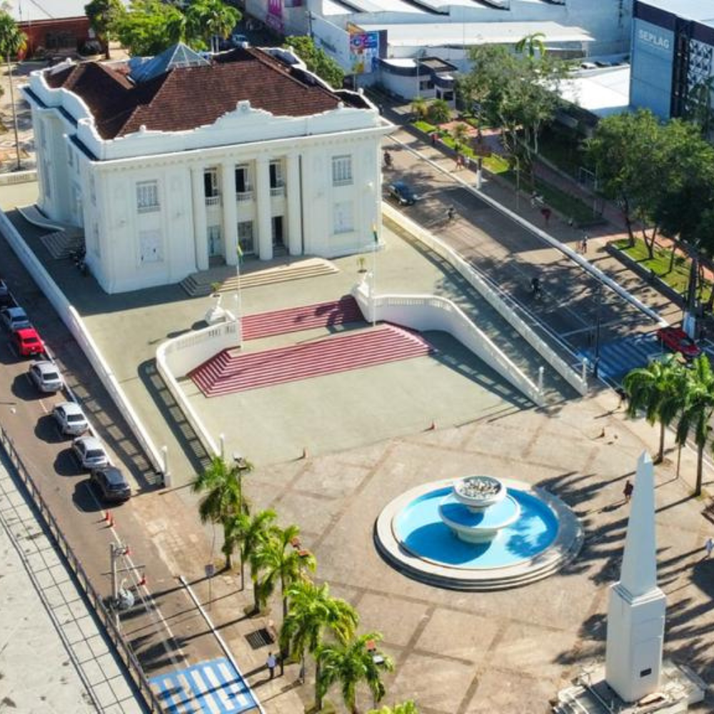

O Acre é um estado singular da Região Norte, historicamente marcado pela Revolução Acreana e por sua integração tardia ao território brasileiro através do Tratado de Petrópolis em 1903. Coberto quase inteiramente pela Floresta Amazônica, o estado possui uma identidade profundamente ligada ao extrativismo da borracha e da castanha, além do legado de figuras icônicas como o líder ambientalista Chico Mendes. Sua capital é Rio Branco e sua cultura rica reflete a forte ancestralidade indígena, o modo de vida ribeirinho e a culinária com sabores marcantes como o quibe de arroz e a baixaria.

Voltar